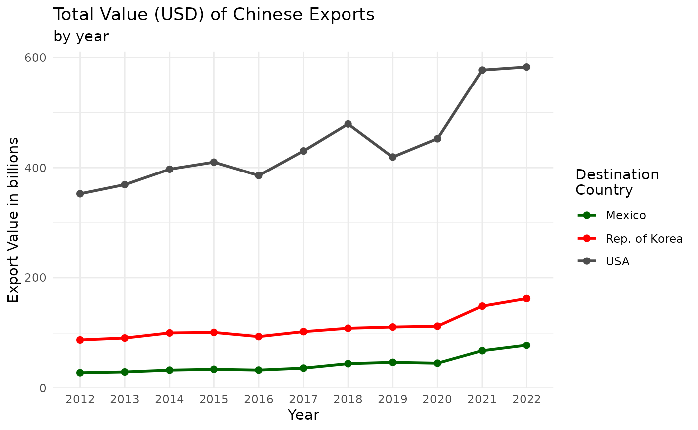
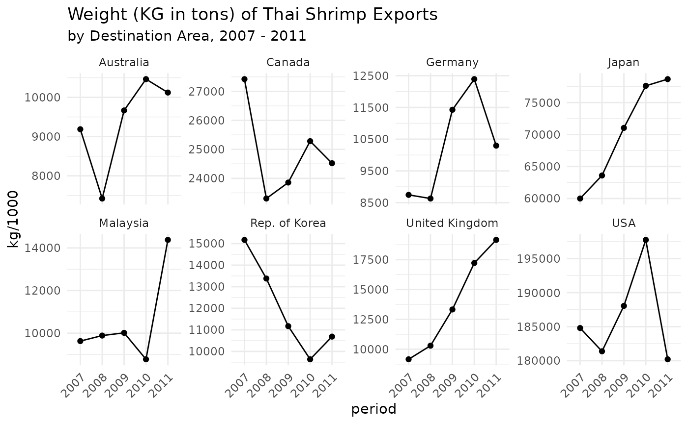

See here for an overview of available commodity classifications.
API wrapper for the UN Comtrade Database. UN Comtrade provides historical data on the weights and value of specific goods shipped between countries, more info can be found here. Full API documentation can be found here.
Install the development version from GitHub:
install.packages("comtradr")Load comtradr
Do not be discouraged by the complicated access to the token - you can do it! 💪
As stated above, you need an API token, see the FAQ of Comtrade for details on how to obtain it:
➡️ https://uncomtrade.org/docs/api-subscription-keys/
You need to follow the detailed explanations, which include
screenshots, in the Wiki of Comtrade to the letter. ☝️ I am not writing
them out here, because they might be updated regularly. However, once
you are signed up, select the comtrade - v1 product, which
is the free API.
If you are in an interactive session, you can call the following function to save your API token to the environment file for the current session.
If you are not in an interactive session, you can register the token once in your session using the following base-r function.
Sys.setenv('COMTRADE_PRIMARY' = 'xxxxxxxxxxxxxxxxx')If you would like to set the comtrade key permanently, we recommend
editing the project .Renviron file, where you need to add a
line with COMTRADE_PRIMARY = xxxx-your-key-xxxx.
ℹ️ Do not forget the line break after the last entry. This is the
easiest by taking advantage of the great usethis
package.
usethis::edit_r_environ(scope = 'project')Lets say we want to get data on the total imports into the United States from Germany, France, Japan, and Mexico, for the last five years.
example_1 <- ct_get_data(
reporter = 'USA',
partner = c('DEU', 'FRA','JPN','MEX'),
commodity_code = 'TOTAL',
start_date = 2018,
end_date = 2023,
flow_direction = 'import'
)API calls return a tidy data frame.
str(example_1)
#> 'data.frame': 20 obs. of 47 variables:
#> $ type_code : chr "C" "C" "C" "C" ...
#> $ freq_code : chr "A" "A" "A" "A" ...
#> $ ref_period_id : int 20180101 20180101 20180101 20180101 20190101 20190101 20190101 20190101 20200101 20200101 ...
#> $ ref_year : int 2018 2018 2018 2018 2019 2019 2019 2019 2020 2020 ...
#> $ ref_month : int 52 52 52 52 52 52 52 52 52 52 ...
#> $ period : chr "2018" "2018" "2018" "2018" ...
#> $ reporter_code : int 842 842 842 842 842 842 842 842 842 842 ...
#> $ reporter_iso : chr "USA" "USA" "USA" "USA" ...
#> $ reporter_desc : chr "USA" "USA" "USA" "USA" ...
#> $ flow_code : chr "M" "M" "M" "M" ...
#> $ flow_desc : chr "Import" "Import" "Import" "Import" ...
#> $ partner_code : int 251 276 392 484 251 276 392 484 251 276 ...
#> $ partner_iso : chr "FRA" "DEU" "JPN" "MEX" ...
#> $ partner_desc : chr "France" "Germany" "Japan" "Mexico" ...
#> $ partner2code : int 0 0 0 0 0 0 0 0 0 0 ...
#> $ partner2iso : chr "W00" "W00" "W00" "W00" ...
#> $ partner2desc : chr "World" "World" "World" "World" ...
#> $ classification_code : chr "H5" "H5" "H5" "H5" ...
#> $ classification_search_code: chr "HS" "HS" "HS" "HS" ...
#> $ is_original_classification: logi TRUE TRUE TRUE TRUE TRUE TRUE ...
#> $ cmd_code : chr "TOTAL" "TOTAL" "TOTAL" "TOTAL" ...
#> $ cmd_desc : chr "All Commodities" "All Commodities" "All Commodities" "All Commodities" ...
#> $ aggr_level : int 0 0 0 0 0 0 0 0 0 0 ...
#> $ is_leaf : logi FALSE FALSE FALSE FALSE FALSE FALSE ...
#> $ customs_code : chr "C00" "C00" "C00" "C00" ...
#> $ customs_desc : chr "TOTAL CPC" "TOTAL CPC" "TOTAL CPC" "TOTAL CPC" ...
#> $ mos_code : chr "0" "0" "0" "0" ...
#> $ mot_code : int 0 0 0 0 0 0 0 0 0 0 ...
#> $ mot_desc : chr "TOTAL MOT" "TOTAL MOT" "TOTAL MOT" "TOTAL MOT" ...
#> $ qty_unit_code : int -1 -1 -1 -1 -1 -1 -1 -1 -1 -1 ...
#> $ qty_unit_abbr : chr "N/A" "N/A" "N/A" "N/A" ...
#> $ qty : num 0 0 0 0 0 0 0 0 0 0 ...
#> $ is_qty_estimated : logi FALSE FALSE FALSE FALSE FALSE FALSE ...
#> $ alt_qty_unit_code : int -1 -1 -1 -1 -1 -1 -1 -1 -1 -1 ...
#> $ alt_qty_unit_abbr : chr "N/A" "N/A" "N/A" "N/A" ...
#> $ alt_qty : num 0 0 0 0 0 0 0 0 0 0 ...
#> $ is_alt_qty_estimated : logi FALSE FALSE FALSE FALSE FALSE FALSE ...
#> $ net_wgt : num 0 0 0 0 0 0 0 0 0 0 ...
#> $ is_net_wgt_estimated : logi TRUE TRUE TRUE TRUE TRUE TRUE ...
#> $ gross_wgt : num 0 0 0 0 0 0 0 0 0 0 ...
#> $ is_gross_wgt_estimated : logi FALSE FALSE FALSE FALSE FALSE FALSE ...
#> $ cifvalue : num 5.36e+10 1.28e+11 1.46e+11 3.49e+11 5.85e+10 ...
#> $ fobvalue : num 0.00 0.00 0.00 0.00 5.75e+10 ...
#> $ primary_value : num 5.36e+10 1.28e+11 1.46e+11 3.49e+11 5.85e+10 ...
#> $ legacy_estimation_flag : int 4 4 4 4 4 4 4 4 4 4 ...
#> $ is_reported : logi FALSE FALSE FALSE FALSE FALSE FALSE ...
#> $ is_aggregate : logi TRUE TRUE TRUE TRUE TRUE TRUE ...
#> - attr(*, "url")= chr "https://comtradeapi.un.org/data/v1/get/C/A/HS?cmdCode=TOTAL&flowCode=M&partnerCode=280%2C251%2C276%2C392%2C250%"| __truncated__
#> - attr(*, "time")= POSIXct[1:1], format: "2023-06-27 22:26:56"Here are a few more examples to show the different parameter options:
By default, the return data is in yearly amounts. We can pass
"monthly" to arg freq to return data in
monthly amounts, however the API limits each “monthly” query to a single
year.
# all monthly data for a single year (API max of 12 months per call).
q <- ct_get_data(reporters = "USA",
partners = c("Germany", "France", "Japan", "Mexico"),
flow_direction = "import",
start_date = 2012,
end_date = 2012,
freq = "monthly")
# monthly data for specific span of months (API max of twelve months per call).
q <- ct_get_data(reporters = "USA",
partners = c("Germany", "France", "Japan", "Mexico"),
flow_direction = "import",
start_date = "2012-03",
end_date = "2012-07",
freq = "monthly")Countries passed to parameters reporters and
partners must be spelled as they appear in the official ISO
3 character code convention.
Search trade related to specific commodities (say, tomatoes). We can query the Comtrade commodity reference table to see all of the different commodity descriptions available for tomatoes.
ct_commodity_lookup("tomato")
#> $tomato
#> [1] "0702 - Tomatoes; fresh or chilled"
#> [2] "070200 - Vegetables; tomatoes, fresh or chilled"
#> [3] "2002 - Tomatoes; prepared or preserved otherwise than by vinegar or acetic acid"
#> [4] "200210 - Vegetable preparations; tomatoes, whole or in pieces, prepared or preserved otherwise than by vinegar or acetic acid"
#> [5] "200290 - Vegetable preparations; tomatoes, (other than whole or in pieces), prepared or preserved otherwise than by vinegar or acetic acid"
#> [6] "200950 - Juice; tomato, unfermented, not containing added spirit, whether or not containing added sugar or other sweetening matter"
#> [7] "210320 - Sauces; tomato ketchup and other tomato sauces"If we want to search for shipment data on all of the commodity
descriptions listed, then we can simply adjust the parameters for
ct_commodity_lookup so that it will return only the codes,
which can then be passed along to ct_search.
tomato_codes <- ct_commodity_lookup("tomato",
return_code = TRUE,
return_char = TRUE)
q <- ct_get_data(
reporter = 'USA',
partner = c('DEU', 'FRA','JPN','MEX'),
commodity_code = tomato_codes,
start_date = "2012",
end_date = "2013",
flow_direction = 'import'
)On the other hand, if we wanted to exclude juices and sauces from our search, we can pass a vector of the relevant codes to the API call.
q <- ct_get_data(
reporter = 'USA',
partner = c('DEU', 'FRA','JPN','MEX'),
commodity_code = c("0702", "070200", "2002", "200210", "200290"),
start_date = "2012",
end_date = "2013",
flow_direction = 'import'
)
In addition to the trade data, each API return object contains metadata as attributes.
# The url of the API call.
attributes(q)$url
#> NULL
# The date-time of the API call.
attributes(q)$time
#> NULLFunctions ct_commodity_lookup is able to take multiple
search terms as input.
ct_commodity_lookup(c("tomato", "trout"), return_char = TRUE)
#> [1] "0702 - Tomatoes; fresh or chilled"
#> [2] "070200 - Vegetables; tomatoes, fresh or chilled"
#> [3] "2002 - Tomatoes; prepared or preserved otherwise than by vinegar or acetic acid"
#> [4] "200210 - Vegetable preparations; tomatoes, whole or in pieces, prepared or preserved otherwise than by vinegar or acetic acid"
#> [5] "200290 - Vegetable preparations; tomatoes, (other than whole or in pieces), prepared or preserved otherwise than by vinegar or acetic acid"
#> [6] "200950 - Juice; tomato, unfermented, not containing added spirit, whether or not containing added sugar or other sweetening matter"
#> [7] "210320 - Sauces; tomato ketchup and other tomato sauces"
#> [8] "030191 - Fish; live, trout (Salmo trutta, Oncorhynchus mykiss, Oncorhynchus clarki, Oncorhynchus aguabonita, Oncorhynchus gilae, Oncorhynchus apache and Oncorhynchus chrysogaster)"
#> [9] "030211 - Fish; fresh or chilled, trout (Salmo trutta, Oncorhynchus mykiss, Oncorhynchus clarki, Oncorhynchus aguabonita, Oncorhynchus gilae, Oncorhynchus apache and Oncorhynchus chrysogaster), excluding fillets, fish meat of 0304, and edible fish offal of 0302.9"
#> [10] "030314 - Fish; frozen, trout (Salmo trutta, Oncorhynchus mykiss, Oncorhynchus clarki, Oncorhynchus aguabonita, Oncorhynchus gilae, Oncorhynchus apache and Oncorhynchus chrysogaster), excluding fillets, meat of 0304, and edible fish offal of 0303.91 to 0303.99"
#> [11] "030321 - -- Trout (Salmo trutta, Oncorhynchus mykiss, Oncorhynchus clarki, Oncorhynchus aguabonita, Oncorhynchus gilae, Oncorhynchus apache and Oncorhynchus chrysogaster)"
#> [12] "030442 - Fish fillets; fresh or chilled, trout (Salmo trutta, Oncorhynchus mykiss, Oncorhynchus clarki, Oncorhynchus aguabonita, Oncorhynchus gilae, Oncorhynchus apache and Oncorhynchus chrysogaster)"
#> [13] "030482 - Fish fillets; frozen, trout (Salmo trutta, Oncorhynchus mykiss, Oncorhynchus clarki, Oncorhynchus aguabonita, Oncorhynchus gilae, Oncorhynchus apache and Oncorhynchus chrysogaster)"
#> [14] "030543 - Fish; smoked, whether or not cooked before or during smoking, trout (Salmo trutta, Oncorhynchus mykiss/clarki/aguabonita/gilae/apache/chrysogaster), includes fillets, but excludes edible fish offal"ct_commodity_lookup can return a vector (as seen above)
or a named list, using parameter return_char
ct_commodity_lookup(c("tomato", "trout"), return_char = FALSE)
#> $tomato
#> [1] "0702 - Tomatoes; fresh or chilled"
#> [2] "070200 - Vegetables; tomatoes, fresh or chilled"
#> [3] "2002 - Tomatoes; prepared or preserved otherwise than by vinegar or acetic acid"
#> [4] "200210 - Vegetable preparations; tomatoes, whole or in pieces, prepared or preserved otherwise than by vinegar or acetic acid"
#> [5] "200290 - Vegetable preparations; tomatoes, (other than whole or in pieces), prepared or preserved otherwise than by vinegar or acetic acid"
#> [6] "200950 - Juice; tomato, unfermented, not containing added spirit, whether or not containing added sugar or other sweetening matter"
#> [7] "210320 - Sauces; tomato ketchup and other tomato sauces"
#>
#> $trout
#> [1] "030191 - Fish; live, trout (Salmo trutta, Oncorhynchus mykiss, Oncorhynchus clarki, Oncorhynchus aguabonita, Oncorhynchus gilae, Oncorhynchus apache and Oncorhynchus chrysogaster)"
#> [2] "030211 - Fish; fresh or chilled, trout (Salmo trutta, Oncorhynchus mykiss, Oncorhynchus clarki, Oncorhynchus aguabonita, Oncorhynchus gilae, Oncorhynchus apache and Oncorhynchus chrysogaster), excluding fillets, fish meat of 0304, and edible fish offal of 0302.9"
#> [3] "030314 - Fish; frozen, trout (Salmo trutta, Oncorhynchus mykiss, Oncorhynchus clarki, Oncorhynchus aguabonita, Oncorhynchus gilae, Oncorhynchus apache and Oncorhynchus chrysogaster), excluding fillets, meat of 0304, and edible fish offal of 0303.91 to 0303.99"
#> [4] "030321 - -- Trout (Salmo trutta, Oncorhynchus mykiss, Oncorhynchus clarki, Oncorhynchus aguabonita, Oncorhynchus gilae, Oncorhynchus apache and Oncorhynchus chrysogaster)"
#> [5] "030442 - Fish fillets; fresh or chilled, trout (Salmo trutta, Oncorhynchus mykiss, Oncorhynchus clarki, Oncorhynchus aguabonita, Oncorhynchus gilae, Oncorhynchus apache and Oncorhynchus chrysogaster)"
#> [6] "030482 - Fish fillets; frozen, trout (Salmo trutta, Oncorhynchus mykiss, Oncorhynchus clarki, Oncorhynchus aguabonita, Oncorhynchus gilae, Oncorhynchus apache and Oncorhynchus chrysogaster)"
#> [7] "030543 - Fish; smoked, whether or not cooked before or during smoking, trout (Salmo trutta, Oncorhynchus mykiss/clarki/aguabonita/gilae/apache/chrysogaster), includes fillets, but excludes edible fish offal"For ct_commodity_lookup, if any of the input search
terms return zero results and parameter verbose is set to
TRUE, a warning will be printed to console (set
verbose to FALSE to turn off this
feature).
ct_commodity_lookup(c("tomato", "sldfkjkfdsklsd"), verbose = TRUE)
#> Warning: There were no matching results found for inputs: sldfkjkfdsklsd
#> $tomato
#> [1] "0702 - Tomatoes; fresh or chilled"
#> [2] "070200 - Vegetables; tomatoes, fresh or chilled"
#> [3] "2002 - Tomatoes; prepared or preserved otherwise than by vinegar or acetic acid"
#> [4] "200210 - Vegetable preparations; tomatoes, whole or in pieces, prepared or preserved otherwise than by vinegar or acetic acid"
#> [5] "200290 - Vegetable preparations; tomatoes, (other than whole or in pieces), prepared or preserved otherwise than by vinegar or acetic acid"
#> [6] "200950 - Juice; tomato, unfermented, not containing added spirit, whether or not containing added sugar or other sweetening matter"
#> [7] "210320 - Sauces; tomato ketchup and other tomato sauces"
#>
#> $sldfkjkfdsklsd
#> character(0)The Comtrade API imposes rate limits on users. comtradr
features automated throttling of API calls to ensure the user stays
within the limits defined by Comtrade. Below is a breakdown of those
limits, API docs on these details can be found here.
The API also limits the amount of times it can be queried per minute, but we could not find documentation on this. Hence the function automatically responds to the parameters returned by each request to adjust to the changing wait times.
In addition to these rate limits, the API imposes some limits on parameter combinations.
reporters, partners do not
have an All value specified natively anymore, we have
implemented it in R for convenience reasons on our side.start_date and end_date
must not span more than twelve months or twelve years. There is no more
parameter to specify All years.commodity_codes, the maximum number of input
values is dependent on the maximum length of the request. Hence, if
specifying reporters or partners, this value
might be shorter.comtradr ships with a few different package data
objects, and functions for interacting with and using the package
data.
Country/Commodity Reference Tables
As explained previously, making API calls with comtradr
often requires the user to query the commodity reference table (this is
done using functions ct_commodity_lookup). These reference
tables are generated by the UN Comtrade, and are updated roughly once a
year. Since they’re updated infrequently, the tables are saved as cached
data objects within the comtradr package, and are
referenced by the package functions when needed.
The function features an update argument, that checks
for updates, downloads the new tables if necessary and makes them
available during the current R session. It will also print a message
indicating whether updates were found, like so:
ct_commodity_lookup('tomato',update = T)If any updates are found, the message will state which reference table(s) were updated.
Additionally, the Comtrade API features a number of different
commodity reference tables, based on different trade data classification
schemes (for more details, see this
page from the API docs). comtradr ships with all available
commodity reference tables. The user may return and access any of the
available commodity tables by specifying arg commodity_type
within function ct_get_ref_table (e.g.,
ct_get_ref_table(dataset_id = "S1") will return the
commodity table that follows the “S1” scheme).
The dataset_id´s are listed in the help page of the
function ct_get_ref_table(). They are as follows:
commodity_code
argument. The name is the same as you would provide under
commodity_classification.ct_get_data()-function.Furthermore, there is a dataset readily available, with the
iso3c-codes for the respective partner and reporter countries
country_codes$iso_3, but I would recommend using the
ct_get_ref_table() function, as it allows to update to the
latest values on the fly.
Once the data is collected, we can use it to create some basic visualizations.
Plot 1: Plot total value (USD) of Chinese exports to Mexico, South Korea and the United States, by year.
# Comtrade api query.
example_2 <- ct_get_data(
reporter = 'CHN',
partner = c('KOR', 'USA','MEX'),
commodity_code = 'TOTAL',
start_date = 2012,
end_date = 2023,
flow_direction = 'export'
)
library(ggplot2)
# Apply polished col headers.
# Create plot.
ggplot(example_2, aes(period, primary_value/1000000000, color = partner_desc,
group = partner_desc)) +
geom_point(size = 2) +
geom_line(size = 1) +
scale_color_manual( values = c("darkgreen","red","grey30"),
name = "Destination\nCountry") +
ylab('Export Value in billions') +
xlab('Year') +
labs(title = "Total Value (USD) of Chinese Exports", subtitle = 'by year') +
theme(axis.text.x = element_text(angle = 45, vjust = 1, hjust = 1)) +
theme_minimal()
Plot 2: Plot the top eight destination countries/areas of Thai shrimp exports, by weight (KG), for 2007 - 2011.
# First, collect commodity codes related to shrimp.
shrimp_codes <- ct_commodity_lookup("shrimp",
return_code = TRUE,
return_char = TRUE)
# Comtrade api query.
example_3 <- ct_get_data(reporter = "THA",
partner = "all",
trade_direction = "exports",
start_date = 2007,
end_date = 2011,
commodity_code = shrimp_codes)
library(ggplot2)
library(dplyr)
# Create country specific "total weight per year" dataframe for plotting.
plotdf <- example_3 %>%
group_by(partner_desc, period) %>%
summarise(kg = as.numeric(sum(net_wgt, na.rm = TRUE)))
# Get vector of the top 8 destination countries/areas by total weight shipped
# across all years, then subset plotdf to only include observations related
# to those countries/areas.
top8 <- plotdf |>
group_by(partner_desc) |>
summarise(kg = as.numeric(sum(kg, na.rm = TRUE))) |>
slice_max(n = 8, order_by = kg) |>
arrange(desc(kg)) |>
pull(partner_desc)
plotdf <- plotdf %>% filter(partner_desc %in% top8)
# Create plots (y-axis is NOT fixed across panels, this will allow us to ID
# trends over time within each country/area individually).
ggplot(plotdf,aes(period,kg/1000, group = partner_desc))+
geom_line() +
geom_point() +
facet_wrap(.~partner_desc, nrow = 2, ncol = 4,scales = 'free_y')+
labs(title = "Weight (KG in tons) of Thai Shrimp Exports",
subtitle ="by Destination Area, 2007 - 2011")+
theme_minimal()+
theme(axis.text.x = element_text(angle = 45,hjust = 1, vjust = 1))
In the comtradr package, several function parameters can
accept everything as a valid input. Using
everything for these parameters has specific meanings and
can be a powerful tool for querying data. Internally, these values are
set to NULL and the parameter is omitted entirely in the
request to the API, the API then by default returns all possible values.
Here’s a breakdown of how everything is handled for
different parameters:
commodity_code
Setting commodity_code to everything will
query all possible commodity values. This can be useful if you want to
retrieve data for all commodities without specifying individual
codes.
flow_direction
If flow_direction is set to everything, all
possible values for trade flow directions are queried. This includes
imports, exports, re-imports, re-exports and some more specified in
ct_get_ref_table('flow_direction').
reporter and partner
Using everything for reporter or
partner will query all possible values for reporter and
partner countries, but also includes aggregates like World
or some miscellaneous like ASEAN. Be careful when
aggregating these values, so as to not count trade values multiple times
in different aggregates. Alternatively, specifically for these values,
you can also use all_countries, which allows you to query
all countries which are not aggregates of some kind of grouped
parameters like ASEAN. These values can usually be safely
aggregated. This allows you to retrieve trade data for all countries
without specifying individual ISO3 codes.
mode_of_transport, partner_2, and
customs_code
Setting these parameters to everything will query all
possible values related to the mode of transport, secondary partner, and
customs procedures. This provides a comprehensive view of the data
across different transportation modes and customs categories.
Here’s an example of how you might use everything
parameters to query comprehensive data:
# Querying all commodities and flow directions for USA and Germany from
## 2010 to 2011
data <- ct_get_data(
reporter = c('USA', 'DEU'),
commodity_code = 'everything',
flow_direction = 'everything',
start_date = '2010',
end_date = '2011'
)Using everything parameters can lead to large datasets,
as they often remove specific filters on the data. It’s essential to be
mindful of the size of the data being queried, especially when using
multiple everything parameters simultaneously.